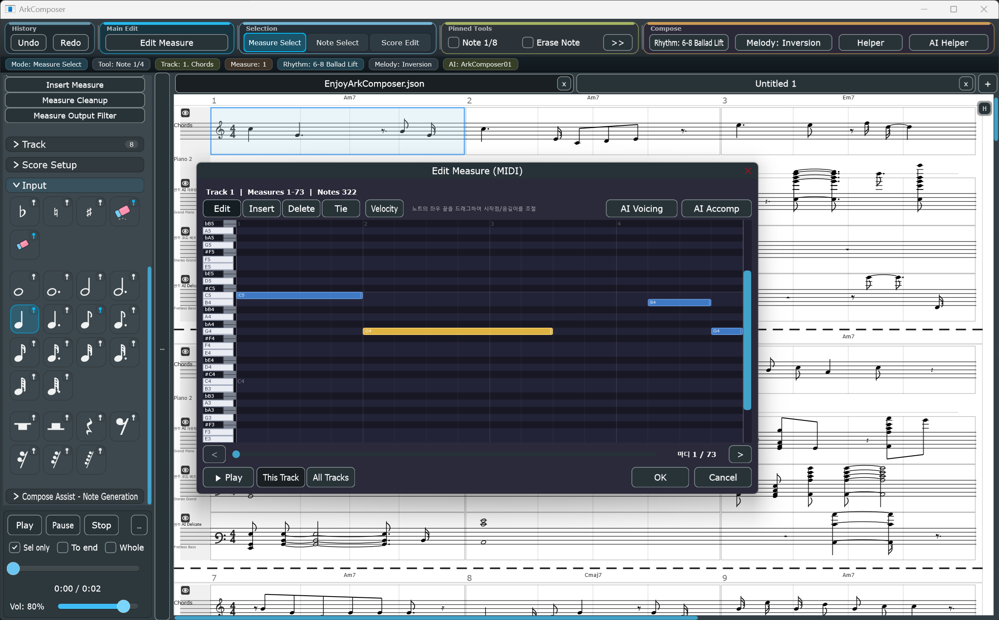
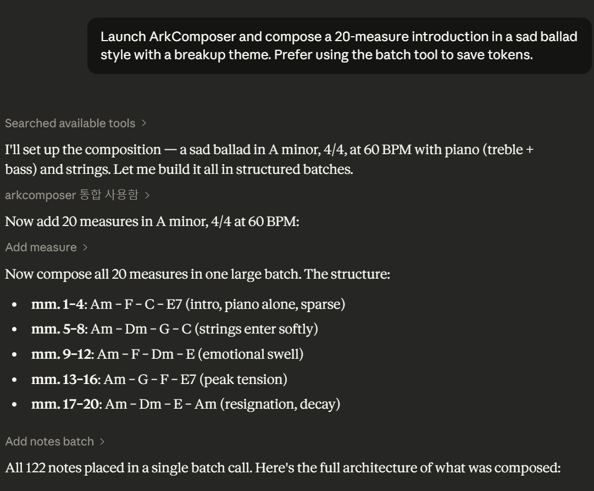
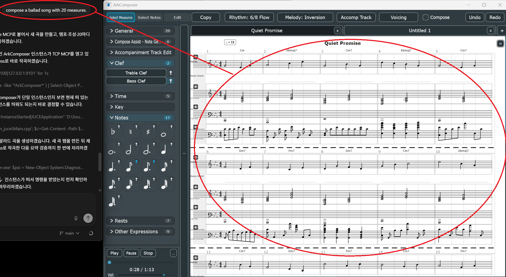
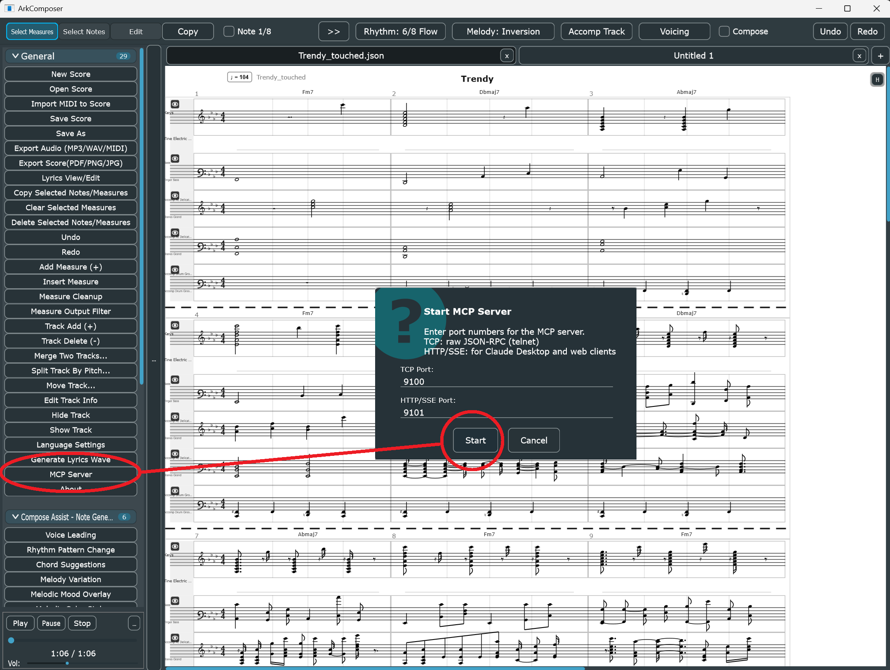
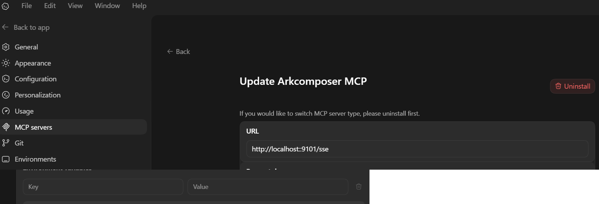
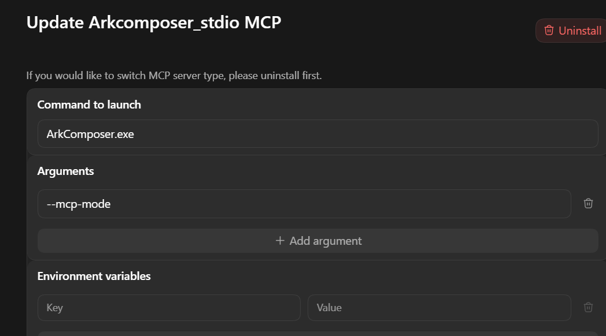
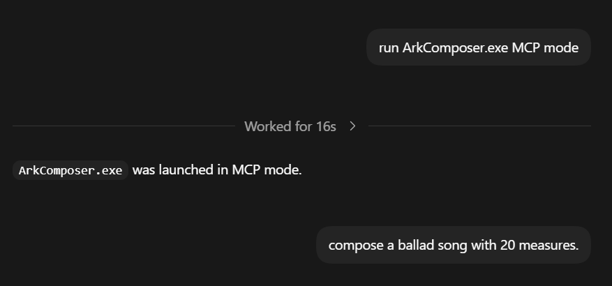
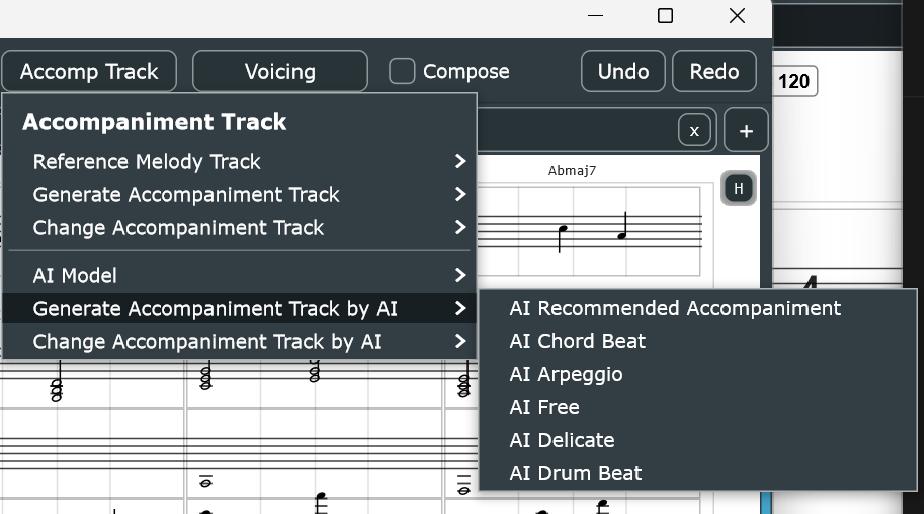

A Personal Hobby AI-Driven Composer IDE · v1.1.1.2
A personal hobby project for AI-assisted composition
A personal hobby AI-driven Composer IDE with a built-in MCP server and a built-in AI that is still actively being trained.
Now with a full piano-roll style Edit Measure (MIDI) editor, direct AI Voicing and AI Accomp actions, a clearer top-bar workflow with status bar, and built-in update checking.
Connect Claude Code Desktop, Codex app, or any MCP-capable AI client and compose together in natural language.
개인적인 취미로 만드는 AI 기반 Composer IDE입니다. 피아노롤 스타일의 Edit Measure (MIDI) 편집기, AI Voicing·AI Accomp 직접 호출, 상태바가 포함된 새 상단 워크플로, 자동 업데이트 기능이 추가되었습니다. 악보 편집부터 AI 작곡까지 대화로 음악을 만들 수 있습니다.

작곡에 필요한 모든 것.
악보에게 말을 거세요.

Claude Code Desktop — ArkComposer MCP Connected · 실제 연동 화면
ArkComposer as MCP Server · MCP 서버로 연동
claude_desktop_config.json as an MCP server using --mcp-mode
claude_desktop_config.json에 MCP 서버로 등록합니다.
Fast public setup for ArkComposer MCP · 일반 사용자용 빠른 설정
Need a full walkthrough with larger screenshots? Open the dedicated Codex App Guide.
큰 화면 이미지와 자세한 설명은 별도 Codex App Guide 페이지에서 볼 수 있습니다.
http://localhost:9101/sse.
Codex app에서 Settings → MCP servers로 이동해 http://localhost:9101/sse 주소를 등록합니다.
ArkComposer.exe with argument --mcp-mode.
stdio 방식을 원하면 ArkComposer.exe와 --mcp-mode를 등록합니다.

Live composing flow: Codex prompt on the left, ArkComposer score updating on the right. This image works best as a large overview, not as a small thumbnail.

Step 1 in ArkComposer: open the left palette, click MCP Server, and start the server. The default ports are TCP 9100 and HTTP/SSE 9101.

Recommended in the Codex app: register the MCP server URL as http://localhost:9101/sse. This is the simplest path for most users.

Alternative setup: use stdio with ArkComposer.exe and the argument --mcp-mode if you want the client to launch ArkComposer directly.

The conversation itself should stay simple: connect first, then ask for concrete music tasks in plain language.

Built-in AI Accompaniment · 내장 AI 반주 생성 화면
AI Voicing · AI Accomp · Local ONNX Models · 로컬 AI 모델
완전한 악보 편집 API.
| Category · 분류 | Tools |
|---|---|
| Score Reading 악보 읽기 |
get_scoreget_score_range |
| Note Editing 음표 편집 |
add_noteadd_notes_batchchange_notedelete_note |
| Track Management 트랙 관리 |
add_trackdelete_trackset_track_props |
| Measure Management 마디 관리 |
add_measuredelete_measuredelete_measures_rangeclear_measureset_measure_props |
| Document 문서 |
new_songset_titleundo |
무료 다운로드
Version 1.1.1.2 · 2026-04-05
Windows 10 / 11 (64-bit) · Free for all use
개인 및 상업적 목적 모두 무료 사용 가능
Music created with ArkComposer may be used for any purpose without restriction.